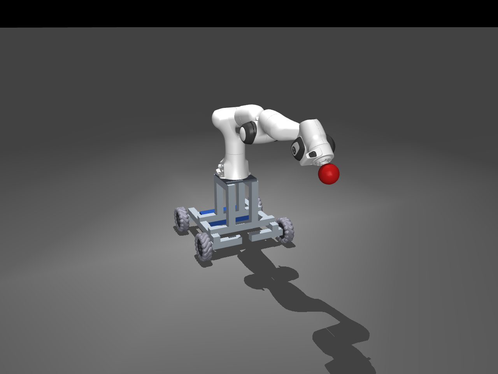
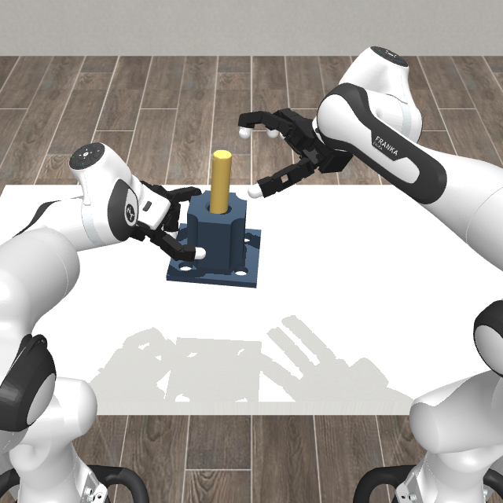
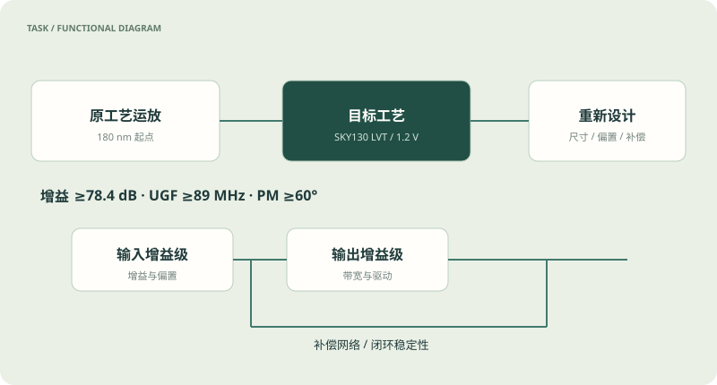
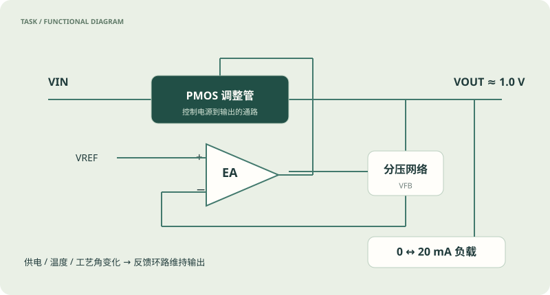
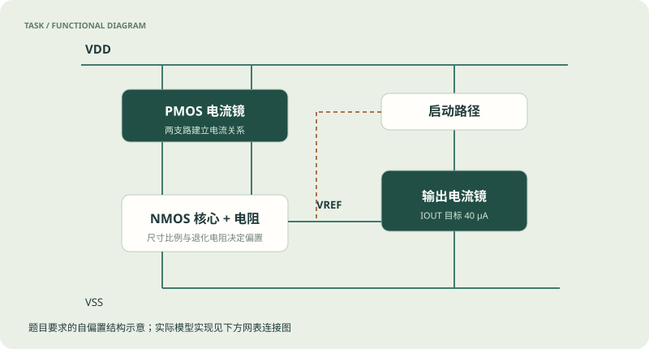
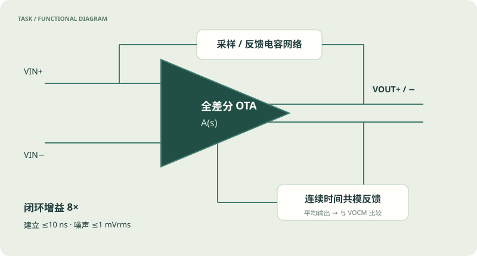
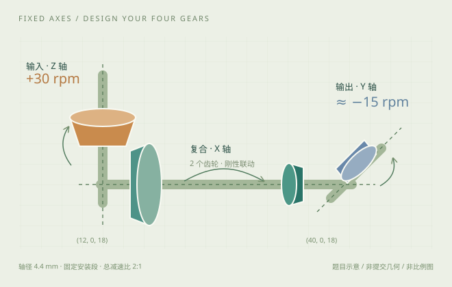

01 / MOBILE MANIPULATION真实提交 · MuJoCo 渲染 ↗D1 · 机器人与自主系统仿真 已完成实测
一套移动底盘，
适配三种机械臂。
↗上游原题复现 · 保留上游移动底盘、三机械臂适配与原生验收任务。
从标准轮组、电池与铝型材出发，自主设计通用移动底盘与控制器。承载 Panda、UR5e、xArm7，完成两档负载下的货架目标到达与保持。
沿着上游任务，记录我们的复现实验。
本页保留原始工程目标与评分的任务，展示模型交付、软件环境、运行轨迹和失败证据。
各题注明工具、开发预算、软件版本或公开契约的变化；不声称完整复刻论文历史实验。
仅更换受测模型、工具接口、开发预算、软件环境或公开执行契约，仍按上游原题复现归档。新增工程目标、设计变量或验收工况的题目在主页展示；采用公开实验数据的 D3 自设题属于后一类。
下载逐题分类依据与来源清单 ↓
01 / MOBILE MANIPULATION真实提交 · MuJoCo 渲染 ↗上游原题复现 · 保留上游移动底盘、三机械臂适配与原生验收任务。
从标准轮组、电池与铝型材出发，自主设计通用移动底盘与控制器。承载 Panda、UR5e、xArm7，完成两档负载下的货架目标到达与保持。

03 / DEXTEROUS BIMANUAL ASSEMBLY参考示范回放 · 非模型成绩 ↗上游原题复现 · 保留双臂灵巧手装配任务；开发预算、reset 与已完成评测范围单列。
双 Panda 与双 Allegro 灵巧手，从三路视觉和本体状态开发抓取、对齐、插装策略。每模型最多两小时开发，原版异步评测，保留 47 个完整回合的结果与失败证据。

02 / ANALOG CIRCUIT PORTING题目功能图 · 实际电路 / 检查点 / 失败证据 ↗上游原题复现 · 沿用原八项电气目标与原评分；本轮调整工具与设计预算。
将运放迁移到 1.2 V SKY130 LVT，重新设计尺寸、偏置与补偿，同时满足八项性能约束。 查看 Docker 自主工具实测、器件连接图与三模型交付与失败证据。

004 / ANALOG CIRCUIT DESIGN题目功能图 · 实际电路 / 检查点 / 失败证据 ↗上游原题复现 · 沿用原稳压、电气验收与工艺角要求；本轮调整工具与设计预算。
设计误差放大器、调整管、反馈分压与内部补偿，在供电、温度和工艺变化中维持稳压。 查看 Docker 自主工具实测、器件连接图与三模型交付与失败证据。

005 / ANALOG CIRCUIT DESIGN题目功能图 · 实际电路 / 检查点 / 失败证据 ↗上游原题复现 · 沿用原电流基准任务与电气评分；本轮调整工具与设计预算。
从空白网表设计自偏置电流基准与启动路径，同时约束电流、参考电压、功耗、输出顺从性与失配。 查看 Docker 自主工具实测、器件连接图与三模型交付与失败证据。

006 / ANALOG CIRCUIT DESIGN题目功能图 · 实际电路 / 检查点 / 失败证据 ↗上游原题复现 · 沿用原采样反馈 OTA 任务与十五项电气验收；本轮调整工具与设计预算。
自主设计全差分 OTA、偏置和共模反馈，使增益 8 的闭环在 PVT 与失配下保持准确、快速和稳定。 查看 Docker 自主工具实测、器件连接图与三模型交付与失败证据。

008 / MECHANICAL TRANSMISSION题目轴系 · 交付 CAD / 验收录像 / 资产审计 ↗上游原题复现 · 保留上游四齿轮传动目标与原评分器；补充公开安装和执行契约。
自主设计四个锥齿轮，在三根正交轴间把 +30 rpm 输入变成约 −15 rpm 输出。交互查看冻结几何、原版接触仿真、逐项检查与失败原因；Sol 的仿真网格不一致已单独标注。
试试“Task08”“DexJoCo”“LDO”“OTA”或“齿轮箱”。
各题采用其独立运行协议，保留原始评分口径，不合并排名。
当前主页展示 A1 定向单件上料改编。此前的单工位清箱原题与 mixed-v1 改编共同保存在历史页：原题属于上游任务复现，mixed-v1 属于我们的改编。历史页面按版本清楚标注，两组成绩分别展示。
查看 Task07 原题与 mixed-v1 历史 →A1–A4 与四个 D3 案例包含新增的工程目标或验收要求。D3 专题提供完整题目、输入素材、预期与实际交付、结果可视化和软件环境。